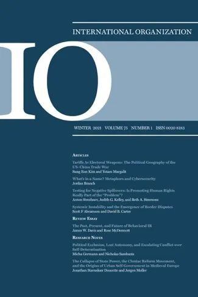
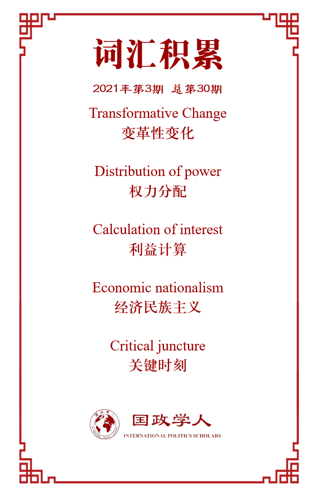

收录于合集

作品简介
【作者】 丹尼尔·德雷兹纳（Daniel W. Drezner ）是塔夫茨大学弗莱彻法律与外交学院的国际政治学教授，布鲁金斯学会（Brookings Institution）非驻会高级研究员以及《华盛顿邮报》（Washington Post）特约编辑。曾在公民教育项目、兰德公司和美国财政部任职，并获得美国德国马歇尔基金会、外交关系委员会和哈佛大学的研究金。
【编译】 孟晓宇（国政学人编译员，山东大学东北亚学院硕士）
【校对】 缪高意 石稚瑄
【审核】 丁伟航
【排版】 张湘苹
【美编 】马颖
【来源】 Drezner, Daniel W. “The Song Remains the Same: International Relations After COVID-19.” International Organization (2020): 1-18. DOI:10.1017/S0020818320000351
【归档】 《国际关系前沿》2021年第3期，总第30期。
期刊简介

《国际组织》（International Organization），简称“IO”，是一份经过同行评议的季刊，涵盖国际事务的领域包括：外交政策、国际关系、国际与比较政治经济学、安全政策、环境争端与解决、欧洲一体化、联盟模式与战争、谈判与冲突解决、经济发展与调整、国际资本流动等。它成立于1947年，由剑桥大学出版社代表国际组织基金会出版，主编是乔治城大学的ErikVoeten。根据Journal Citation Reports显示，2019年其影响因子为5，在95种国际关系期刊中排名第2。
“歌声依旧”：新冠肺炎后的国际关系
The Song Remains the Same: International Relations
After COVID-19
Daniel W. Drezner
文章导读
自新冠肺炎爆发以来，有大量评论认为2020年将对世界政治产生变革性影响。本文聚焦的问题是：几十年后，新冠肺炎是否会被视为世界政治的一个拐点。不可否认，流行病在很久以前就产生了这种影响。然而近几个世纪以来，经济和医疗的发展有力地削弱了流行病的地缘政治影响。一项关于新型肺炎在头六个月如何影响权力和利益分配的研究表明，新冠肺炎不会对世界政治产生变革性影响，2020年不太可能成为一个拐点。
01
引言
划分历史时期是国际关系学术中常见的概念工具。历史上，1648年、1815年、1914年、1945年和2008年作为关键时刻（critical juncture），令国际关系的多个方面在极短的时间内发生了变化。2020年，新冠肺炎或会引发自大萧条以来最严重的经济衰退。自二战以来，还没有哪个事件在如此短的时间内对人类行为产生如此显著的世界性影响。因此，2020年是否会被视为一个世界政治的拐点（inflection point）呢？
作者认为若要成为世界政治的拐点，就必须改变权力分配、利益计算或行为体的社会构成等基本因素。 尽管新冠肺炎具有显著的短期影响，但它不太可能对国际关系产生变革性的影响。与过去的流行病相比，新冠肺炎很可能被归入国际关系学的脚注。
02
世界政治中变革性变化的标准
流行病和政治本质上是交织在一起的，流行病可以对世界政治施加重要影响。 但是肯尼思·沃尔兹(Kenneth Waltz)曾说过：国际政治的结构保持高度稳定，模式反复出现，事件无休止地重复发生。即使是解释世界政治不断演变的社会结构理论也承认， 国际关系在类型与质量上的急剧变化可能需要几十年甚至几个世纪的时间才能展开。 那么世界政治中的变革性变化是由什么构成的呢？
世界政治中有两种方式可以触发变革性的变化：第一，关键因果变量发生不连续变化，导致非预期国际结果的发生；第二，当前的行动对未来可能发生的反应施加了明显的限制，致使世界政治加速走上一条难以改变的轨道上。
03
流行病与世界政治
流行病与国际关系史之间具有以下联系：首先，疾病已经改变了几千年的世界政治；其次，国际体系的变化亦可影响疾病的传播；第三，尽管流行病并没有消除，但过去两个世纪在经济和观念上的一系列进步减弱了流行病对世界政治的影响。
在人类历史的大部分时间里，瘟疫和流行病确实产生了变革性影响。例如，在伯罗奔尼撒战争中，瘟疫成为了左右战争的关键因素并导致了雅典的衰落；瘟疫结束了罗马军队在欧洲的升级统治，停止了罗马的地理扩张；公元6世纪第一次出现的腺鼠疫，致使拜占庭帝国由崛起转为衰落等等。
但近两个世纪以来出现的大多数流行病虽产生了严重的短期影响，但很难争辩说这些疾病引发了世界政治的变革性变化。1918年的流感成为世界历史上死亡人数最多的流行病。但就生命和经济损失而言，1918年流感的总体影响小于一战。2003年的SARS疫情并没有减缓中国在国际体系中的崛起，也没有削弱中国对包括世卫组织在内的全球治理结构的影响力。2009年的甲型H1N1流感疫情在国际关系中几乎没有引起波澜。过去十年的埃博拉或寨卡疫情都没有影响到大国政治。
这突显了一种趋势——流行病在国际关系中的影响逐步减弱。 从19世纪中叶到20世纪中叶，一系列的发展与进步将流行病在强国社会中的影响降低了一个数量级。医学研究和实践方面的创新，疾病细菌理论的发展，疫苗的研制以及抗生素的使用限制或降低了流行病的传播和影响。
相比之下，新型冠状病毒的病理毒性比流感小得多，其病死率也要低一个数量级。与1918年的流感病毒株不同，新型冠状病毒对年轻人和劳动年龄人口的影响并不太大；与埃博拉或寨卡病毒不同，新冠肺炎的物理效应不会引起其他人的厌恶。贾里德·戴蒙德(Jared Diamond)总结说，与过去的许多流行病不同，新冠病毒不会造成军事失败、人口迁移或放弃欠耕土地。
04
权力分配
新冠病毒的爆发加剧了国际对中美权力变化的思考。到2020年3月，中国已经基本控制住了病毒，甚至向受灾严重的欧洲国家运送了个人防护装备和其它医疗用品。相比之下，美国的反应则是无能的。截至2020年7月，拥有全球4%人口的美国，对全球超过四分之一的新冠肺炎感染和死亡人数负有责任。
然而，2020年5月进行的一项教学、研究和国际政策(TRIP)快速民意调查的结果表明：绝大多数(54%)的国际关系学者不同意新冠肺炎从根本上改变世界政治中权力分配的观点，而只有31%的人同意这一观点。尽管美国在混乱中表现糟糕，但其在经济与金融领域的实力依然强大。
在新冠肺炎之前美国已经加强了其在全球金融网络中的结构性实力。在疫情期间，美国无与伦比的领导地位之一就是通过美联储向其它中央银行提供大量的互换额度，保证它们获得美元。在财政方面，美国国会通过了《冠状病毒援助、救济和经济安全法》（Coronavirus Aid, Relief, and Economic Security, CARES），提供了2万亿美元的援助。如果说衡量国家实力的一个关键指标是不受限制的花钱能力，那么美国仍然是一个独特的超级大国。由此可见， 新冠病毒不太可能对权力分配产生变革性的影响。 但有一个不确定性因素便是由疫苗研制成功而带来的强大的力量。
05
利益分配
唐纳德·特朗普(Donald Trump)的当选、2020年英国退欧以及中美贸易战突显了全球民粹主义的激增，赋予了更倾向于经济民族主义的社会经济利益。新冠肺炎初期的趋势线也指向了经济脱钩，但其是否加速了经济脱钩？乍一看，答案似乎是肯定的。新冠肺炎的性质要求限制人员的跨境流动，并催生了将所有疾病的根源归咎于外国人的民粹主义倾向。且随着进入外国市场的机会减少，出口商的市值缩水，进口替代将会蓬勃发展。
然而，也有大量相反的证据表明，无论是国家行为体、公众舆论还是经济利益集团，都没有因为新冠肺炎而加速走向封闭。例如，即使疫情恶化，特朗普白宫也优先考虑与中国的第一阶段贸易协议；皮尤研究中心(Pew Research)与晨间咨询（Morning Consult）的民调都发现，大多数美国人更愿意与中国合作，以应对这场混乱。中美两国在金融和科学研究领域仍存在着复杂的相互依存。 由此可见，由于新冠肺炎而远离开放的利益分配并未加速，大流行既没有改变也没有加速既有的经济利益分配。
06
结论
值得庆幸的是新冠肺炎爆发六个月后，人们所预测的一系列的糟糕情况并未成为现实。虽然新冠肺炎的余震是真实存在的，但其持久影响可能微乎其微。在遥远的过去，流行病改变了国际政治；但在最近的过去，流行病的影响则变得更加温和。
在文章结尾，作者提出了三个警示，告诫我们不能小觑新冠肺炎：首先，如果特朗普并没有因为疫情爆发而落选总统，他将继续冲击现有国际秩序。其次，新冠疫情引发了对经济效率和弹性之间的权衡。最后，新冠肺炎可能预示着更大冲击的到来。人类的过度繁盛可能致使整个星球面临严峻的流行病或生态考验，如果新冠肺炎就是这一征兆，那么它对世界政治的影响确实将是变革性的。
译者评述
新冠肺炎在全球的蔓延对国际社会带来了深远的影响。面对疫情的突然席卷，全球治理能力严重不足的缺陷暴露无遗。国际合作的受阻，民族排外主义情绪的高涨，全球产业链暂时的中断甚至全球人员流动的停滞等致使国际社会在短时间内发生了一系列巨变。关于新冠肺炎将对国际政治或国际关系产生变革性影响的评论普天盖地而来。有学者认为新冠肺炎会造成地缘政治的破坏，成为全球化第一阶段和第二阶段的历史性标志；甚至有智库预测新冠肺炎会造成武装冲突的增加，国际关系转型迷失以及全球化衰退和合作倒退。
然而在国内外学界不停“思变”之际，作者却通过梳理历史上流行病与国际政治的相互作用，发现了流行病对国际政治的影响正逐渐减弱的变化趋势。本文界定了世界政治中“变革性变化”的标准，从“权力分配”和“利益计算”的角度对新冠肺炎对世界政治的影响进行了有力分析。作者的研究方法与结论促使我们去思考国际政治模式变化的原因，为我们分析新冠肺炎的影响力提供了创新性的角度，也为探索流行病与世界政治间关系的命题提供了研究思路。这些研究议题在非传统安全愈加凸显的背景下具有重要的时代意义。但是新冠肺炎对全球的影响仍不容低估，我们仍需加强抗疫能力以及应对国际黑天鹅事件的能力。
参考文献
[1] Kahl, Colin, and Ariana Berengaut.(2020). Aftershocks: The Coronavirus Pandemic and the New World Disorder. War on the Rocks, 10 April. https://warontherocks.com/2020/04/aftershocks-the-coronavirus-pandemic-and- the-new-world-disorder/.
[2] Kaplan, Robert D. “Coronavirus Ushers in the Globalization We Were Afraid Of.” Bloomberg Opinion 20 (2020).
[3] The Defence and Military Analysis team.(2020). The COVID-19 Pandemic: Scenarios to Understand the International Impact, 2 November. https://www.iiss.org/blogs/research-paper/2020/11/covid-19-international- impact.
词汇整理

文章观点不代表本平台观点，本平台评译分享的文章均出于专业学习之用, 不以任何盈利为目的，内容主要呈现对原文的介绍，原文内容请通过各高校购买的数据库自行下载。
好好学习，天天“在看”